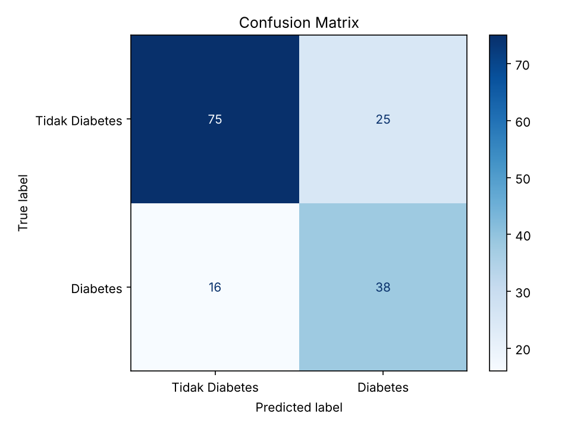
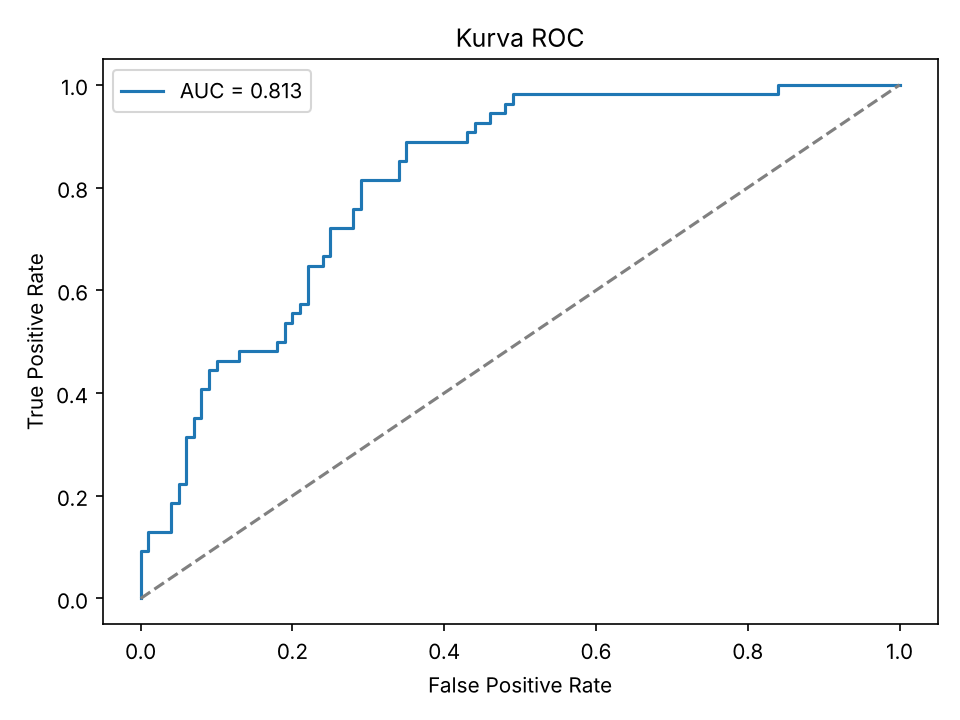
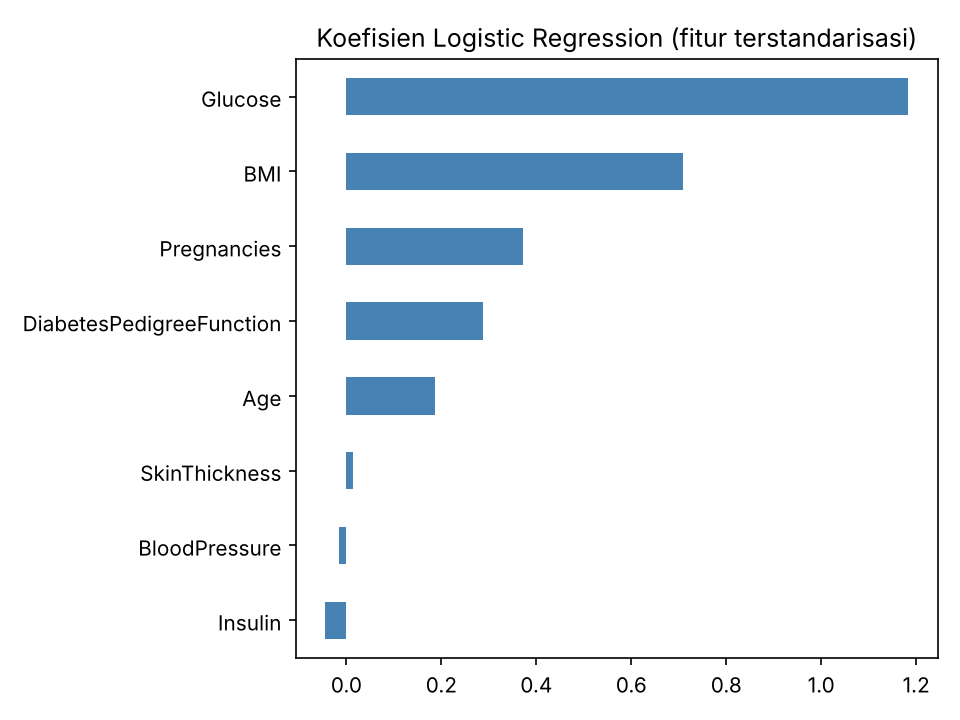

Cek risiko diabetes,
didukung machine learning.
Masukkan hasil pemeriksaan klinis dan model dilatih dari 768 pasien Pima Indians akan menghitung probabilitas risikonya secara instan. Data Anda tidak dikirim ke server mana pun.
Seberapa akurat modelnya?
Diuji pada 154 pasien yang tidak dipakai saat pelatihan.



Tentang proyek
Data. Pima Indians Diabetes Database dari NIDDK: 768 pasien perempuan berusia 21 tahun ke atas, dengan 8 fitur klinis. Sebanyak 268 pasien berlabel diabetes.
Model. Logistic Regression dengan imputasi median, standardisasi fitur, dan class_weight=balanced. Nilai 0 pada glukosa, tekanan darah, ketebalan kulit, insulin, dan BMI dianggap data hilang.
Batasan. Model dilatih pada satu populasi tertentu sehingga belum tentu akurat untuk kelompok lain. Hasilnya hanya perkiraan statistik.